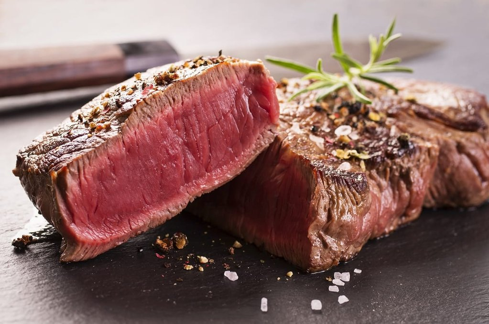

מי אנחנו?

|
מי אנחנו?"שוקומוקו" הוקם לפני שבועיים (ה-20 לנוב' 2018) על ידי עומר גביזון ואיתן אפשטיין – תלמידי בית ספר שאהבו בשר אהבה בלתי מותנית. אהבתם לבשר, ביחד עם אהבתם לבישול, אפייה והכנת אוכל, הובילה אותם לפתיחת מסעדת שוקומוקו, שמשתמשת רק בבשר האיכותי ביותר, ומביאה את כל הטעמים בבשר החוצה, אל לשונכם. מאז שהוקמה, נפתחו שני סניפים של שוקומו: אחד בנס ציונה (2018), והשני בנס ציונה (2018), במרחק שני רחובות אחד מהשני. המסעדות מצליחות ואנשים מכל רחבי נס ציונה באים לאכול בהן. |
מנות הדגל של שוקומוקו
|  |
סטייק ריב-איי (ribeye)description |
המבורגר קלאסיdescription |

|